📖 Manual Operativo y Técnico - ORION WMS
Sistema Integral de Gestión de Almacén, Recepción y Control Logístico Avanzado
🔒 Módulo 1: Acceso, Seguridad y Navegación Principal
1.1 Arquitectura de Autenticación y Control de Roles
-
Inicio de Sesión Seguro: El sistema restringe estrictamente el acceso operativo mediante credenciales encriptadas (correo corporativo y contraseña). Ningún usuario no autorizado puede ejecutar transacciones en piso.
Detalles y Guía Técnica: El módulo de autenticación valida las credenciales contra la base de datos central. Implementa sesiones seguras y control de tokens para garantizar que el operario mantenga su trazabilidad en cada movimiento.
Puntos clave:
• Validación obligatoria de correo corporativo.
• Encriptación de claves de acceso.
• Propósito: Evitar accesos indebidos y asegurar que cada auditoría o alistamiento quede firmado digitalmente por el responsable. -
Dinámica de Roles, Permisos y Control Multi-Almacén: Al autenticarse, Orion configura el menú principal habilitando o deshabilitando módulos en tiempo real según el rol del usuario. Además, en la esquina superior derecha se visualiza y selecciona el almacén activo (ej. CEDI, BOD, M145, M105, MASB, MCHIA, RUMBOS, SIBE, UBATE, BUCA, SOA, TUNJA, ZIPA).
Estructura del Menú y Almacenes:
• Dashboard de Métricas, Recepción de Mercancía, Gestión de Almacén, Operaciones de Stock y Alistamiento Logística Mascotas.
• Control Multi-Almacén: Permite alternar y definir el contexto operativo de inventario actual entre las diferentes sedes disponibles.
• Funcionalidad: Interfaz adaptativa que reduce errores ocultando funciones no autorizadas.
1.2 Menú Lateral, Ajustes y Productividad
-
Menú Lateral de Gestión Operativa: Despliega el perfil completo del usuario, cambio de credenciales, configuración de impresoras térmicas y periféricos (Zebra, Epson, Brother ZPL/CPCL). Incluye las opciones avanzadas: Tomar información de ficha técnica y Escáner externo.
Configuración de Periféricos:
• Tomar información de ficha técnica: Interruptor (SÍ/NO) para captura automática de datos técnicos del ítem.
• Escáner externo: Alterna entre pistola lectora de códigos física o cámara móvil.
• Valor técnico: Conexión directa con hardware y personalización según el operario. -
Dashboard de Métricas de Rendimiento: Panel superior en tiempo real que consolida la productividad individual acumulada.
KPIs Monitoreados: Unidades procesadas, referencias procesadas y pedidos procesados acumulados en tiempo real.
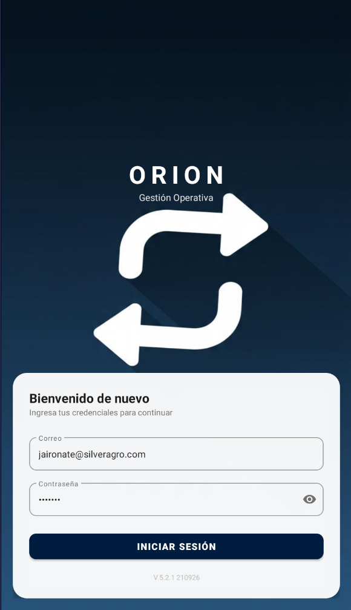
Pantalla de Login
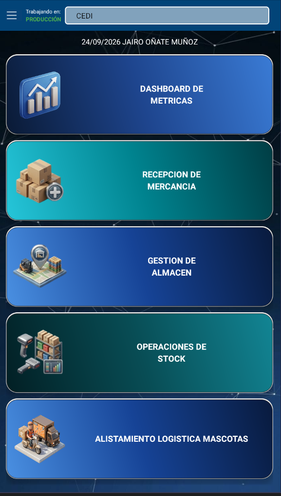
Menú Principal y Almacenes
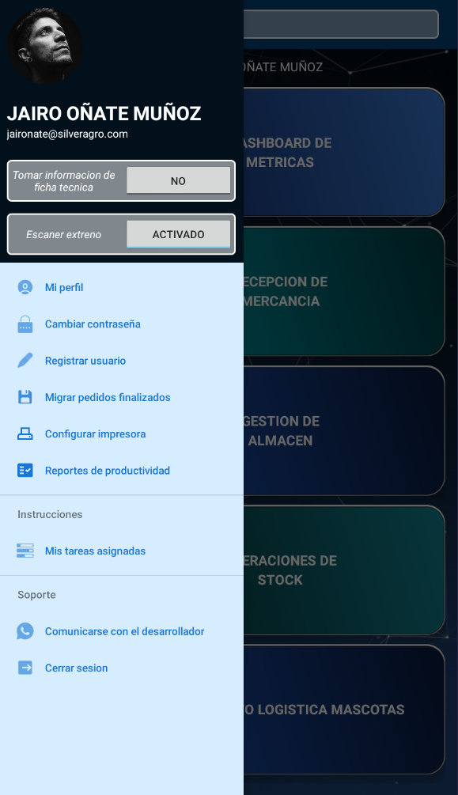
Menú Lateral y Periféricos
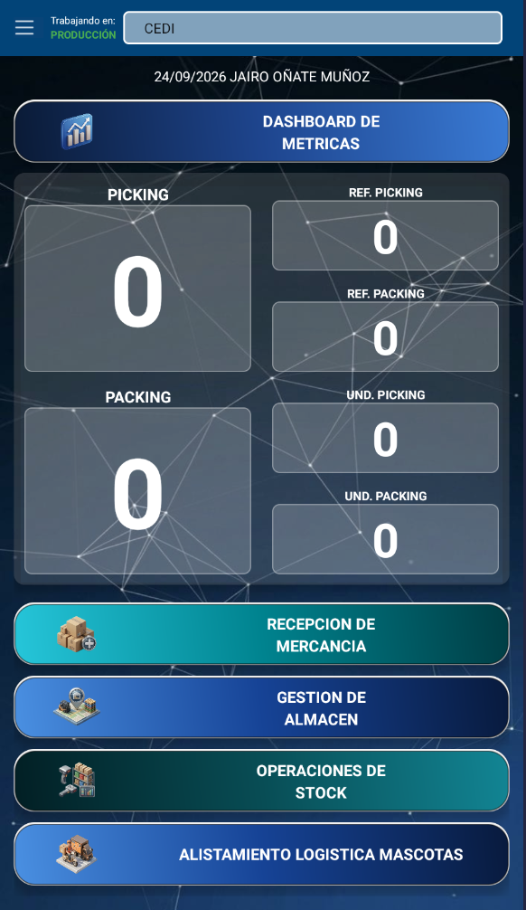
Dashboard de Métricas
📦 Módulo 2: Recepción de Mercancía y Auditorías Integradas
2.1 Flujo de Recepción (Arquitectura de 3 Pestañas)
-
Nueva Auditoría (Pestaña Central): Formulario para registrar datos del documento de entrega del proveedor (NIT, Factura, ODC) y configuración física inicial (cajas, bultos, neveras de cadena de frío).
Campos de Cabecera: NIT, Proveedor, Número de Factura, ODC, Comentarios de recepción y Conteo físico de cajas, neveras, bultos o galones con responsable de transporte.
-
Auditorías Abiertas (Pestaña Izquierda): Recepciones pendientes con conexión directa a SAP Business One. Al hacer clic se abre el Formulario de Producto para ingresar unidades, lotes, vencimientos, IVA y descuentos.
Sincronización ERP: Conexión bidireccional y captura detallada que evita discrepancias con el inventario de compras.
-
Auditorías por Cargar a SAP (Pestaña Derecha): Registro de recepciones con preliminares (variaciones de precio, fechas cortas o discrepancias).
Ingreso por Preliminar: Filtros rápidos por factura/proveedor y formulario para registrar el número de entrada generado en SAP junto a comentarios de legalización.
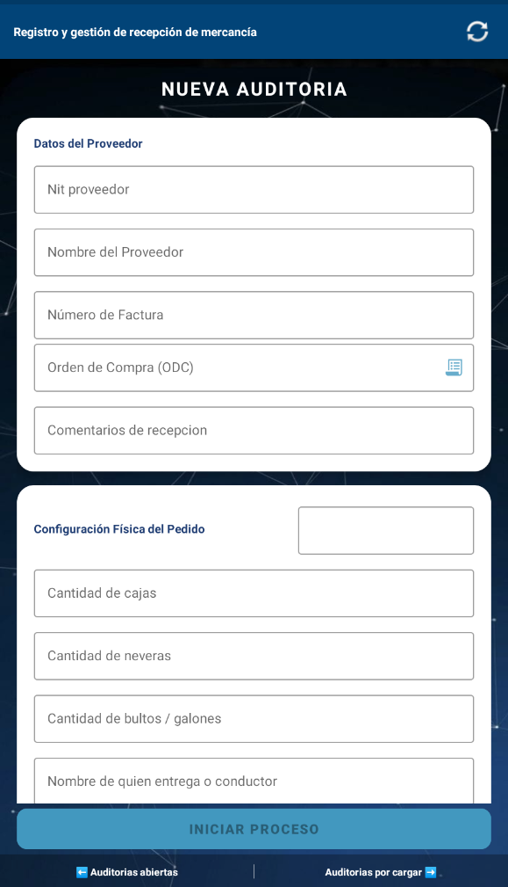
Nueva Auditoría
Auditorías Abiertas y Producto
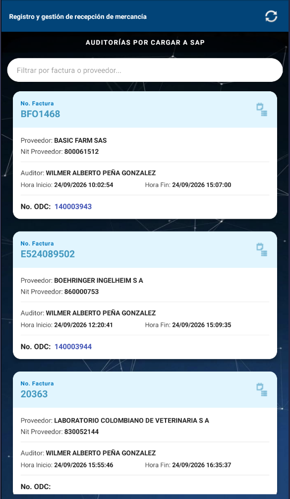
Auditorías por Cargar a SAP
🏢 Módulo 3: Gestión de Almacén e Inventarios Parciales
3.1 Gestor de Almacén, Ubicaciones y Auditoría Histórica
-
Inventario Virtual vs. Físico y Gestión de Movimientos: Consulta el estado de SKU, fotografías, stock disponible y estibas.
Operaciones Disponibles:
• Actualización de Ubicación: Modificación puntual de posición, unidades, lote y vencimiento de un SKU.
• Reubicaciones Masivas: Traslado completo de referencias de una estiba a un nuevo destino. -
Línea de Tiempo e Historial de Cambios: Auditoría forense inmutable con hora, usuario, tipo de acción y valores.
Detalle de Trazabilidad: Filtro rápido e inspección exacta de cambios (valores anteriores/nuevos, lotes, vencimiento y ubicación) para esclarecer diferencias.
3.2 Control de Inventarios Parciales por Diferencia
- Priorización Automatizada de Conteos: Listado inteligente que agrupa artículos con mayores brechas entre stock físico y virtual para optimizar los conteos cíclicos.

Gestor y Ubicaciones

Historial de Cambios
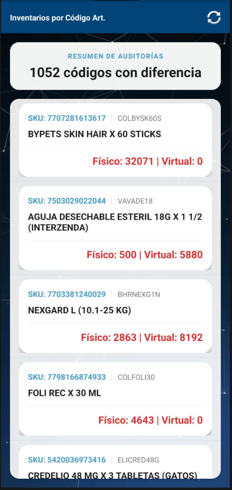
Inventarios Parciales
📋 Módulo 4: Operaciones de Stock (Picking, Voz y Novedades)
4.1 Picking Masivo Multi-Factura y Optimización de Rutas
-
Alistamiento Simultáneo (Hasta 7 Documentos): Consolidación de pedidos para reducir desplazamientos o trabajo individual por pedido según preferencia.
Control Visual y Vistas: Switch entre vista ampliada y vista detallada, historial de productos listos, filtros de ordenamiento de ruta y apoyo auditivo Picking Voice (Switch Talk).
- Control de Tiempos y Alertas de Retraso: Cronómetro con cuenta regresiva por pedido que vigila el ritmo y alerta sobre demoras injustificadas.
4.2 Validación Estricta de Lotes y Gestión de Novedades
-
Flujo de Escaneo Inteligente y Menú de Ayuda: Muestra unidades solicitadas, lote exacto y filtra las posiciones que lo contienen.
Menú de Ayuda (3 Opciones):
1. Búsqueda automática del producto en Google.
2. Reporte de producto en traslado (se completa en Packing).
3. Reporte de novedades protegido con clave única que notifica al supervisor en tiempo real vía Panel Web.
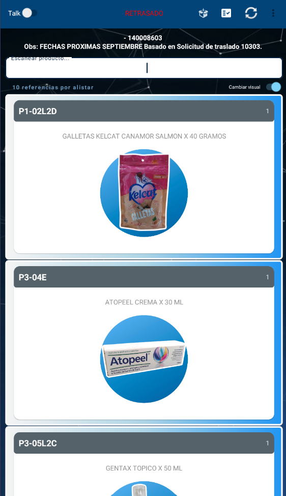
Picking Individual y Vistas
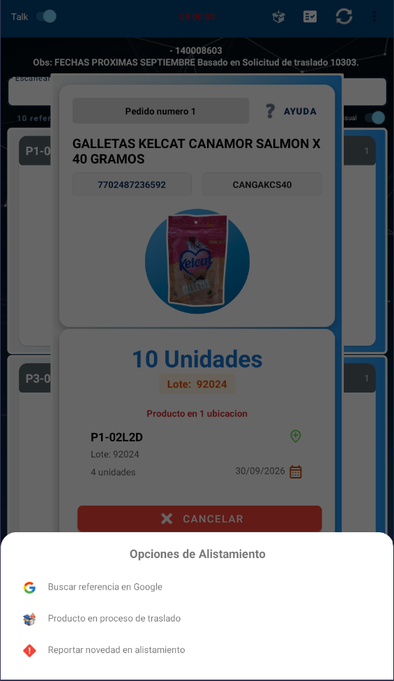
Menú de Ayuda y Lotes
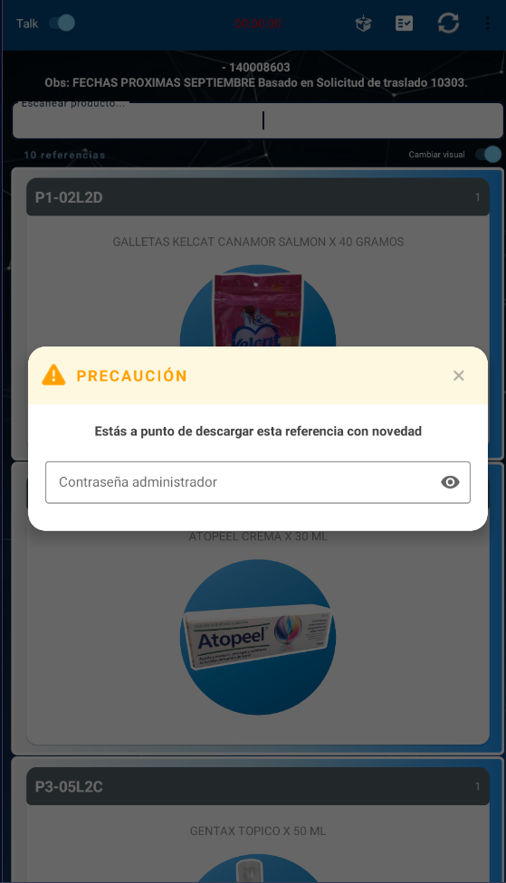
Gestión de Novedades
📦 Módulo 5: Productiva PACKING, Rotulado y Validación Final
5.1 Selección de Documento y Asignación de Mesa
- Cola de Empaquetado y Asignación de Mesa: Confirmación de inicio de packing y escaneo obligatorio de mesa física (ej. MESA 1) para evitar duplicidad de empaque.
5.2 Lectura de Producto, Display Amplificado y Confirmación
-
Display Gigante de Lote/Unidades: Pop-up en fuente ampliada que facilita la inspección visual directa y la verificación por cámaras de seguridad.
Botones de Acción: Confirmación explícita con (+) Verde o Cancelación con (X) Rojo ante anomalías físicas.
5.3 Rótulos de Remesa y Checklist Final de Despacho
-
Generación de Rótulos e Impresión en Red: Previsualización de rótulos con alertas de fragilidad y envío a impresoras térmicas.
Checklist Obligatorio de Calidad: Inspección de Cadena de Frío, Sellos/Firmas y Logística/Piezas antes del despacho del vehículo.
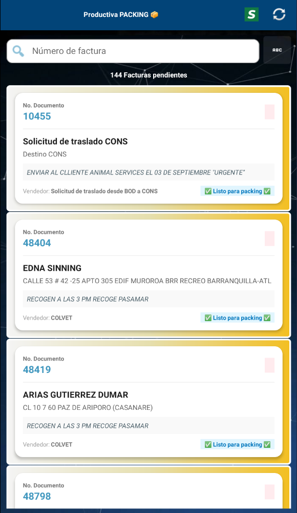
Facturas y Mesa
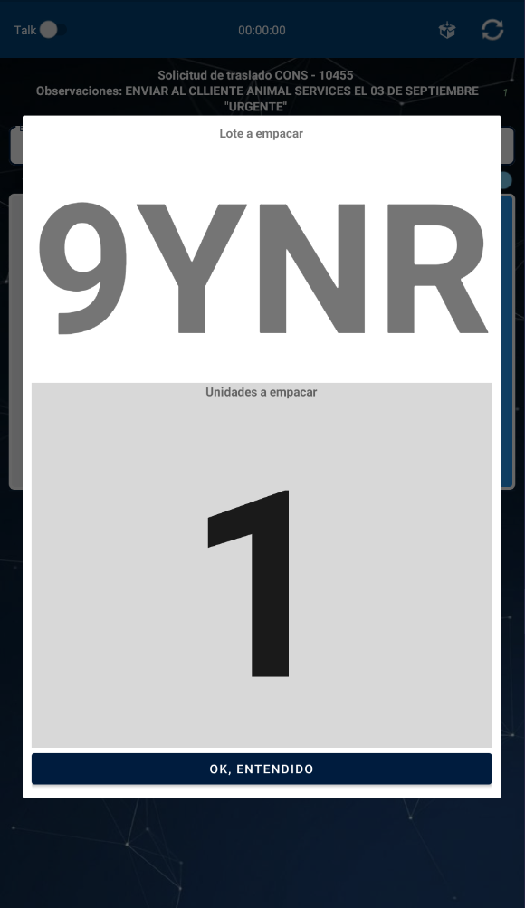
Lote, Unidades y Empaque
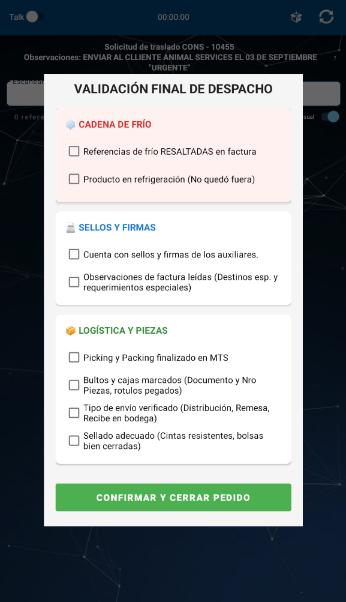
Rótulo y Checklist Final
📊 Módulo 6: Informes de Alistamiento, Trazabilidad y Cadena de Frío
6.1 Consola Global y Auditoría de Tiempos
- Vista Universal y Tiempos de Operación: Monitoreo de órdenes y desglose cronológico exacto entre tiempos de Picking y Packing por usuario.
- Trazabilidad Unitaria y Novedades Post-Entrega: Consulta ítem por ítem con registro de reclamos o inconsistencias post-entrega.
6.2 Calculadora Estándar de Cadena de Frío
- Asistente Térmico de Embalaje: Cálculo automático de geles refrigerantes según temperatura de la ciudad de destino y capacidad de nevera para productos termolábiles (2 °C a 8 °C).

Facturas y Acciones

Tiempos y Productos

Cadena de Frío
🛠️ Anexo Técnico: Matriz de Escalamiento y Glosario Logístico
A. Matriz de Escalamiento de Novedades y Excepciones
| Novedad / Evento | Módulo | Acción en Sistema | Escalar a: |
|---|---|---|---|
| Diferencia ODC / Factura | Recepción (M2) | Guardar como Preliminar | Encargado de compras |
| Fechas Cortas / Calidad | Recepción (M2) | Registro en Formulario Producto | Gerente de operaciones / Líder de almacenamiento |
| Stock Físico Descuadrado | Almacén (M3) | Inventario Parcial por Diferencia | Supervisor de bodega |
| Faltante / Lote Trocado | Picking (M4) | Reportar Novedad por Clave | Supervisor de bodega / Líder de almacenamiento |
| Producto en Tránsito Local | Picking (M4) | Marcar "Producto en Traslado" | Supervisor de bodega |
| Reclamación Post-Entrega | Informes (M6) | Novedad sobre SKU en Factura | Supervisor de bodega / Líder de almacenamiento |
B. Glosario Térmico y Operativo WMS
- WMS (Warehouse Management System): Software especializado en la administración, control y optimización de los flujos de inventario en centros de distribución.
- Picking: Fase de localización, recolección y extracción de productos desde sus posiciones físicas en bodega.
- Packing: Fase de verificación, empaquetado, embalaje isotérmico y rotulado final de las mercancías.
- SKU (Stock Keeping Unit): Código único e irrepetible asignado a una referencia comercial para su control de stock.
- Cadena de Frío (Termolábiles): Productos biológicos o medicamentos que requieren conservación en rango estricto de refrigeración (2 °C a 8 °C).